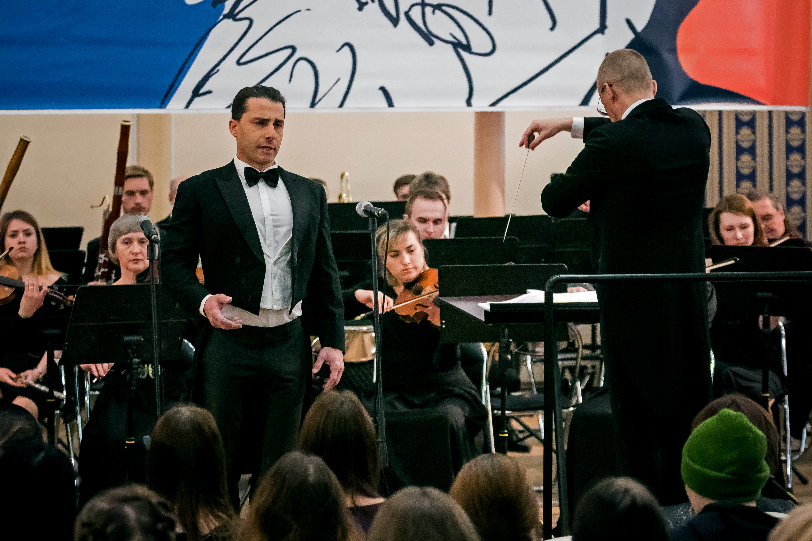

Concerto
Uma noite emocionante com grandes melodias, entre o teatro musical, a ópera e o crossover clássico.
Quero assistirSobre o concerto
Uma experiência próxima, elegante e emocionante
Este concerto nasce do desejo de cantar repertórios que atravessam gerações e continuam encontrando novos sentidos quando são vividos ao vivo. Ao lado de um pianista, com a presença de uma soprano convidada e, muito provavelmente, também de um violinista, a noite propõe um encontro íntimo entre voz, palavra e melodia.
O público ouvirá canções eternas da Broadway, dos musicais, da ópera e de clássicos populares interpretadas com acompanhamento ao piano, convidados especiais e uma atmosfera de teatro próximo. Mais do que uma sequência de músicas, o concerto procura contar pequenas histórias: amores possíveis, despedidas, sonhos, lembranças e momentos em que uma melodia parece dizer aquilo que as palavras sozinhas não alcançam.
Uma nova jornada
O início de uma nova fase artística
Este projeto marca o começo de uma nova fase na minha carreira. Depois de tantos caminhos entre ópera, televisão, gravações, redes sociais e repertório crossover, sinto que este concerto reúne de forma muito verdadeira aquilo que mais me move: cantar com emoção, contar histórias e estar perto do público.
As primeiras apresentações acontecerão na Áustria, país que há muitos anos faz parte da minha vida musical. No fim do ano, em dezembro, o concerto também será apresentado no Brasil, em um retorno muito especial a esse repertório diante do meu público brasileiro.
Minha esperança é que, a partir de 2027, este projeto cresça e se transforme em uma turnê pelo Brasil, levando essas canções a plateias de diferentes cidades. Ainda é um caminho sendo construído, mas ele nasce com sinceridade, cuidado e muita vontade de compartilhar beleza.
Ensaio
Preparando o concerto ao piano
Este vídeo mostra um momento simples de ensaio ao piano, preparando uma das canções que farão parte do concerto.
Repertório
Melodias que permanecem
O repertório pode variar a cada apresentação, preservando a liberdade do momento e o encontro com cada plateia. Entre as obras previstas estão:
- Some Enchanted Evening South Pacific
- Empty Chairs at Empty Tables Les Misérables
- Stars Les Misérables
- If I Loved You Carousel
- Memory Cats
- The Impossible Dream Man of La Mancha
- This Is the Moment Jekyll & Hyde
- So In Love Kiss Me, Kate
- The Way You Look Tonight clássico popular
Duetos
- All I Ask of You The Phantom of the Opera
- Somewhere West Side Story
Muitas outras canções bonitas também poderão fazer parte de cada apresentação.
Convite
Viva este concerto ao vivo
Algumas músicas revelam sua força de modo especial quando acontecem no mesmo instante em que respiramos juntos: artista, convidados e plateia. Este concerto é um convite para esse encontro.